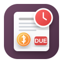

Payment Due Login Popup gives accounting users a focused reminder of posted customer invoices and vendor bills that are due or overdue and still have a residual balance.
p>The reminder is shown once per Odoo login session and does not interrupt every browser refresh.
Review sales invoices and purchase bills with partner, company, due date, status, and amount due.
Open a document directly while the reminder stays available in a compact minimized box.
Odoo 19.0 with the Accounting application installed.